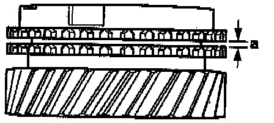

Synchronizer Ring: Specifications
MEASUREMENT SPECIFICATIONS
Synchro-ring Wear For 1st, 3rd And 4th Gears
- Press synchro-ring onto gear and measure gap -a- with feeler gauge.
1st Gear Gap -a-
New: 1.0-1.7 mm (0.039 0.067 inch)
Wear Limit: 0.5 mm (0.020 inch)
3rd Gear (3GR) Gap -a-
New: 1.0-1.7 mm (0.039 0.067 inch)
Wear Limit: 0.5 mm (0.020 inch)
4th Gear (4GR) Gap -a-
New: 1.0-1.7 mm (0.039 0.067 inch)
Wear Limit: 0.5 mm (0.020 inch)

Synchro-Ring Wear For 2nd Gear
- Press synchro-ring, outer ring and inner ring onto cone of 2nd gear.
- Measure gap -a- with feeler gauge.
2nd gear Gap -a
New: 1.2-1.8 mm (0.7-0.071 inch)
Wear Limit: 0.5 mm (0.020 inch)

Synchronizer Inner Ring Wear, 2nd Gear
- Press inner ring onto cone of 2nd gear.
- Measure gap -a- with feeler gauge.
2nd gear Gap -a-:
New: 0.75-1.25 mm (0.030-0.049 inch)
Wear Limit: 0.3 mm (0.012 inch)

Synchro-Ring Wear, 5th Gear
- Press synchro-ring onto cone of gear and measure gap -a- with feeler gauge.
Gap -a- 5th gear:
New: 1.10-1.70 mm (0.043-0.067 inch)
Wear limit: 0.50 mm (0.020 inch)